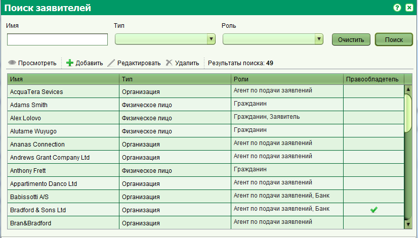

На форме поиска заявителя вы можете найти физических или юридических лиц по заданным критериям поиска и осуществить просмотр их данных, отредактировать или удалить. Также на форме поиска можно создать новую запись. Для того чтобы открыть форму поиска заявителя, выберите из главного меню Поиск > Поиск заявителей, или нажмите соответствующую кнопку на панели инструментов.

Вы можете осуществлять поиск по имени (названию), типу и роли заявителя.
Поле имя поддерживает поиск по частичному совпадению значения и будет искать удовлетворяющие записи как в имени так и фамилии заявителя.
Для добавления новой записи, воспользуйтесь кнопкой "Добавить" на панели инструментов, расположенной над результатами поиска
Для редактирования записи, выберите ее в результатах поиска и нажмите кнопку "Редактировать"
Оба действия (добавление и редактирование) открывают форму заявителя, на которой вы можете ввести или изменить данные физического или юридического лица.
По окончанию ввода данных, нажмите кнопку сохранения.
Для удаления записи, выберите ее в результатах поиска и нажмите кнопку "Удалить"
. Удалять можно только тех заявителей, которые не являются
владельцами недвижимости или держателями каких-либо других прав.
Для просмотра записи, выберите ее в результатах поиска и нажмите кнопку "Просмотреть"
.